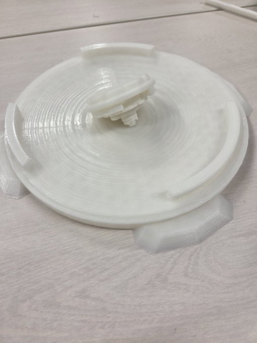

作品の説明
3Dプリンターを用いてベイブレードを制作しました。
大きく分けて三つのパーツに分かれていて、組み合わさることで回転するようになります。
ランチャーは友人のを借りています。
制作理由
久々に持っていたものでやろうとしたら従兄弟にあげられていたため、それなら自分で作ってやろうという思いで制作した。
幼いころからオリジナルのものを作ってみたかった。
実物の写真

まとめと感想
ギミック系のものなので3Dプリンターの小さなズレに左右されやすく、試行回数を重ねる必要があった。従来のものとは異なる機構で成り立たせることができたことは、オリジナリティを出すうえでよかったと感じる。何個か作って対戦できるようにしたいですね。